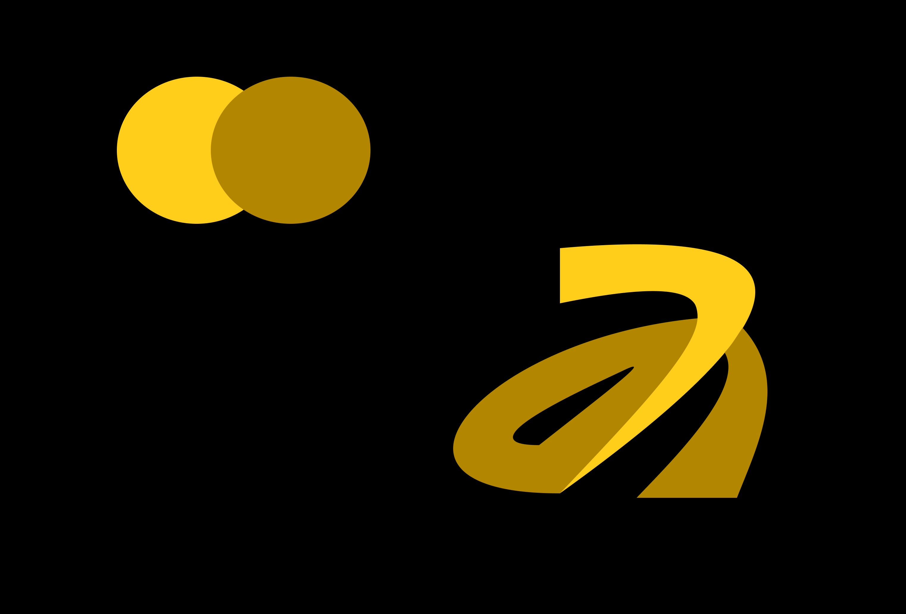

Personal Logo Design
Idea and Reasoning
Parametric approach to monogram logo development
Overview
The Logo was developed through systematic process with a set
of geometric primitives as combination of parameters.
My objective was to come to a logotype, whose form can be justified, rather than simply drawn.
Every curve has been thought of, simply said, every line had defined shape and formula where they come from.
Analysis
The source characters in this logo are letters A and M. Establishing both cases (Uppercase & Lowercase), made it possible to identify which structural features both have in common.
Decomposition into primitives
Rather than working with lowercase "a" as a single glyph, its form was decompsed into three constituent shapes:
- A circle, forming the bowl
- A vertical line, forming the stem
- An arc, forming the top curve
Mathematics of each primitive
Each primitive was assigned a formal equation. Freehand path was done but the reasoning behind it still stands as proportionally adjusted mark.
Merge
With a shared geometrical values with both letters, the design becomes much easier to understand one arc represents the letter A, while the two of those arcs represent the letter M. The merge of those leads to the final design.
Final design
The resulting logotype consists of the overlapping arcs, rendered in a warm mustard yellow palette. The design was my formal decision documented with geometrical origin, an approach that was more of an creative decision than logo-making one.
